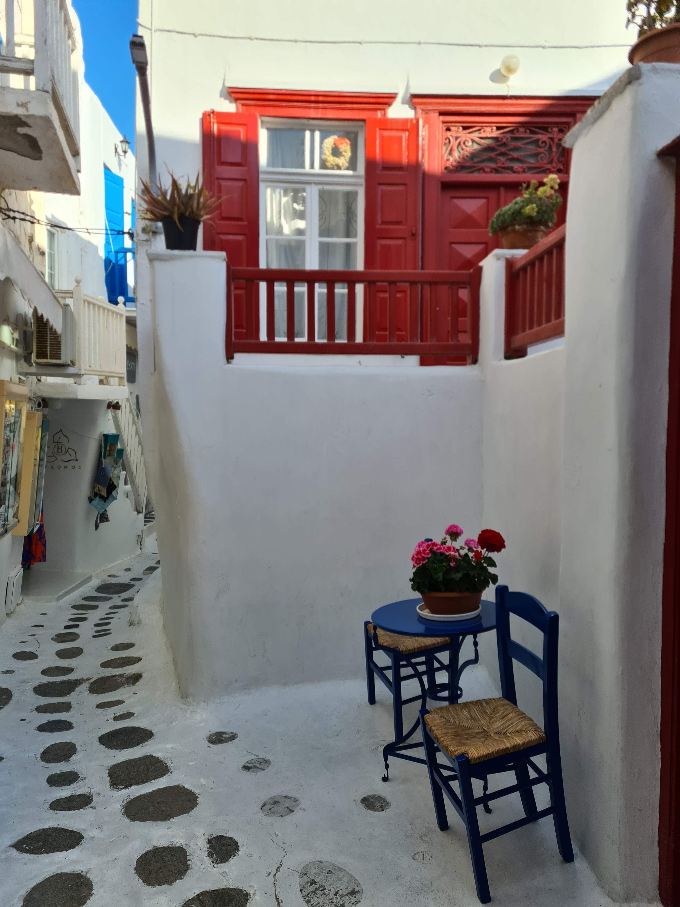
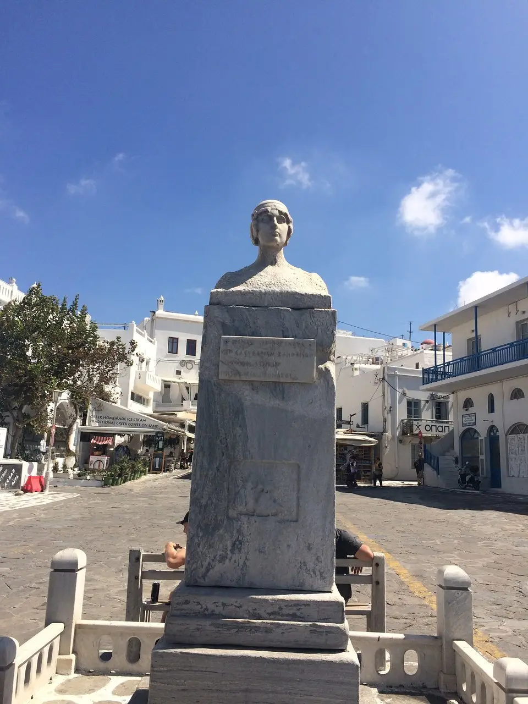
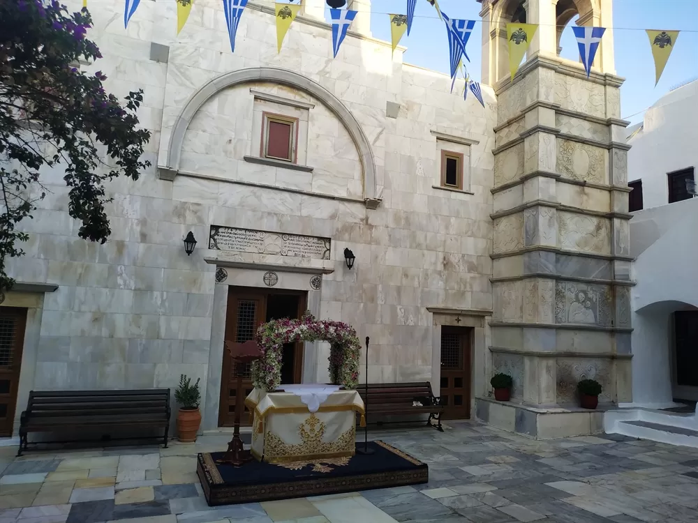

Chora, on foot
The Old Port
Every arrival on this island has started right here: the sailors, the merchants, every traveler who ever stepped off a boat before you, long before this harbor learned to be photographed. Breathe in the salt, the diesel, the old rope, the real scent of arrival. The old Town Hall still watches over the water, its arches unexpectedly Russian, a quiet trace of the merchants who once passed through. What does it feel like to begin exactly where everyone before you began?
Panagia Paraportiani
Look at the way these four small chapels curve into one another, whitewashed by hand for centuries, shaped by nothing but instinct and repair. Just behind it rises the Kastro, the old sea-wall neighborhood that once guarded the town from raiders, its rooftops still spilling down toward the water. If you stop hunting for the postcard shot and just look, what does this place actually tell you?
Little Venice
Stand where the water strikes the foundations and let the spray reach your face. These houses were built from nothing but stone and defiance against the sea, and they are still standing. What is the one thing in your own life you've built to withstand the waves?

Tucked in a narrow backstreet behind Little Venice sits a small table most people walk straight past. Back in the day, word moved quietly through the right circles: if you wanted a preview of Valentino's next collection, you didn't ask him, you simply found wherever he was sitting that season, because that's where the inspiration was coming from. The best ideas, it turns out, rarely announce themselves. What place have you been overlooking that might be quietly shaping you?


The Windmills
Listen before you look: the wind moving through timber that has held this same shape for centuries, no engine, no current, only air against sail. It once ground the grain that kept an entire island alive. How many storms do you think this wood has stood through, deaf to everything except the wind?
The Chapel Built With Wine
They say this chapel was mixed with wine instead of water when it was built. The island keeps its secrets quietly, for anyone who thinks to ask. What quiet detail of your own life would surprise people, if they only thought to ask?
Giora's Bakery
Breathe in before you look: warm dough, six centuries of the same oven's heat. Duck under a ceiling held up by ship's masts, Russian vessels, repurposed as beams above your head. Just flour, water, fire, nothing here has ever needed to change. Taste something still warm and notice what hasn't changed here in longer than most nations have existed. When did food last taste like more than just food to you?
Matoyiannia
Walk slower here than you think you need to, and let your fingers brush the bougainvillea spilling over the blue balconies onto white stone. This is the island's most photographed street, and somehow still unrehearsed underfoot. What's the last place that stopped you mid-sentence, just by being beautiful?
Cine Manto
Feel the cool night air move through real trees instead of speakers, under a screen that has held real stars for decades. You may well meet Petros, the island's own pelican, wandering the grounds like he owns the place, because in a way, he does. What's the last thing that made you feel like a child again, without even trying?


Statue of Manto Mavrogenous
Stand close enough to meet her marble gaze. Manto Mavrogenous, the Mykonian noblewoman who armed her own ships and spent her fortune on Greek independence, asking nothing back. The island remembers her not as a footnote, but as one of its own who chose to act. What would you risk everything for, if you knew it truly mattered?
If you'd like, we pause here for a traditional Greek lunch. Otherwise, we continue straight to the transfer for the second half.
Prefer just this half? The Chora walk alone books as a standalone two-hour tour.
Reserve on WhatsApp →You continue by private Mercedes V-Class or Sprinter, your guide and driver with you throughout, door to door.
The island beyond the town
Armenistis Lighthouse
Let your eyes lose themselves where the sky meets the sea: no lines, no borders, only blue, nothing added, nothing missing. When you look into a horizon this wide, what is the first thing you feel truly grateful for today?



Ano Mera & Panagia Tourliani
Pass through the gate slowly, as if entering another world. Because you are. Feel the cool of the marble courtyard, hear only the rustle of leaves and doves. When was the last time you felt this safe, this quiet, for no reason at all?


Kalafatis & Elia
Leave your shoes at the edge and feel the sand shift warm beneath your feet before the cool water surprises you. Somewhere behind you, two soft hills rise from the coastline, the kind of quiet geometry that calms you before you understand why. No plans left to hold onto here, nothing to check off, just sand, water, sky. What does it feel like to leave behind every title, every schedule, and become, just for an afternoon, one with the summer?